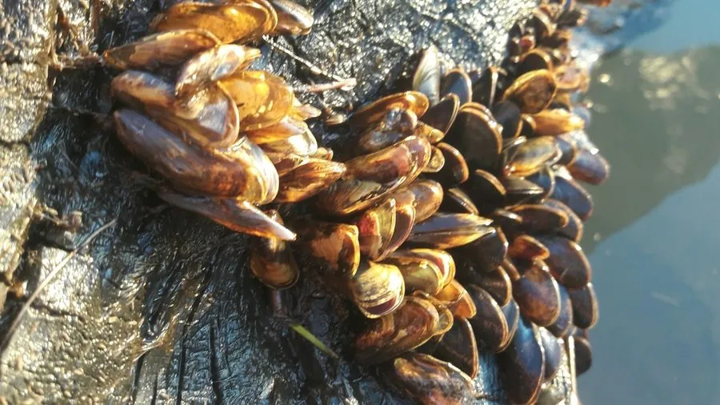

软体动物 · 动物界
沼蛤 Limnoperna fortunei

壳面金黄、体长两三厘米的淡水贻贝，原产中国南方，随船只传入南美，堵塞管道，是著名的入侵物种。
- 分类
- 门软体动物门纲双壳纲目贻贝目科贻贝科属沼蛤属
- 栖息环境
- 淡水江河、湖泊、水库及水工设施内壁
- 地理分布
- 原产中国南方与东南亚，现入侵日本、韩国及南美多地
- 保护级别
- 入侵物种，无保护需求，需重点监测与防除
物种志
沼蛤的壳长约二至三厘米，壳形楔状，壳质薄，壳面黄绿至金黄色，有细密的生长纹，壳内面呈淡紫色珍珠光泽，因此也叫金贻贝。它靠足丝附着在硬质表面，常成群聚集，密度可达每平方米数万只，把水管内壁糊成一层厚厚的壳。
它原产中国南方和东南亚的淡水江河湖泊，二十世纪后期随压舱水和船体附着传播到日本、韩国，又传入南美洲的拉普拉塔河流域，如今在巴西、阿根廷、乌拉圭大量繁殖。它以滤食浮游藻类为生，繁殖期在春夏，幼虫浮游数周后附着。它会堵塞水电站冷却管道、水厂取水口和灌溉设施，造成巨大经济损失，同时改变水体浮游生物群落，是国际知名的入侵物种。
形态与习性
- 壳长约二至三厘米，壳质薄
- 壳面黄绿至金黄，壳内淡紫珍珠光泽
- 附着足丝固着，密度可达每平方米数万只
- 食性滤食淡水浮游藻类
- 危害堵塞冷却管道与取水口
- 传播随压舱水与船体附着跨洲扩散
趣味知识
- 它的壳在阳光下泛金光，金贻贝的名字由此而来。
- 它能在水管里长成厚厚一层，水电站每年都要停机清理。
- 从亚洲到南美，它搭着压舱水漂洋过海，成了洲际入侵的典型。